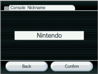
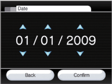
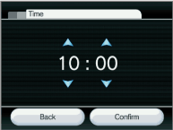
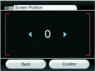
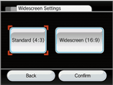
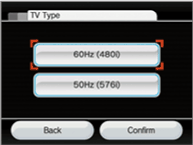
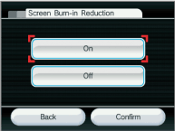
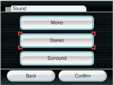

Console Nickname
Calendar
Date Setting
Time Setting
- The Wii mini console uses a 24-hour clock. For example, 1:00 pm is displayed as 13:00.
Screen
Screen Position
Widescreen Settings
Standard (4:3)
Select when you're using a television that supports only standard 4:3 screen aspect ratio.
Widescreen (16:9)
Select when you’re using a widescreen television or a television that supports a 16:9 widescreen aspect ratio.
- If you select STANDARD (4:3), please set your television screen format to "standard" or "normal" to display video with the correct vertical and horizontal ratios. Different television manufacturers may use a different term for the 4:3 format setting.
- If you select WIDESCREEN (16:9), please also adjust your television screen format to take advantage of its own widescreen mode(s).
- Some television sets will not change to widescreen display even when receiving widescreen input from the Wii mini console.
TV Type
- The Wii mini console does not support 480p progressive display output.
Screen Burn-in Reduction
When images are displayed in the same place for long periods of time, some television screens can suffer “screen burn-in”. (See "CAUTION - TV SCREEN DAMAGE" in the Wii mini Operations Manual - System Setup, for more information on TV screen damage.) The Wii mini console has a Screen Burn-in Reduction feature. When activated, the Wii mini console will fade the screen when Wii software is paused for five or more minutes. (You can revert the screen to its original brightness by simply pressing any button on the Wii Remote other than the POWER Button.)
You can turn Screen Burn-in Reduction ON or OFF by making your selection, then confirming it.
- Your TV may also have its own screen-burn-in-reduction function that may fade back the screen imagery or darken it entirely.
- The Wii mini console's Screen Burn-in Reduction does not work for all types of software. We recommend that you turn the television off when not playing.
- Please follow your TV manufacturer's recommendations to avoid screen burn-in.
Sound
Mono
Select when you want sound output to come equally out of the left and right speakers. Some games may include only Mono sound.
Stereo
Select when using software that provides different sounds for the left and right speakers to create a fuller audio effect.
Surround
Select when using software that provides different sounds for the left, right, and other speakers to create an even-fuller audio effect. Your game and TV or audio equipment must be compatible with surround sound to take advantage of this feature.